etcd · 核心原理图谱
分布式控制面 KV:写走 Raft 多数派复制 + 顺序 apply,读用 ReadIndex 免走日志,MVCC 多版本 + Watch 事件 + Lease 租约。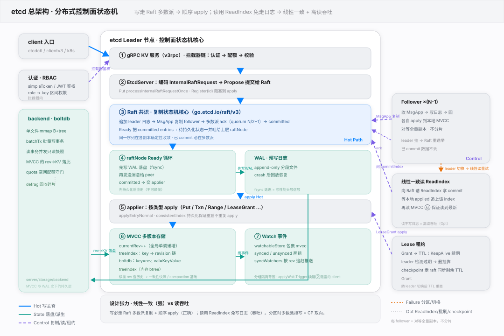
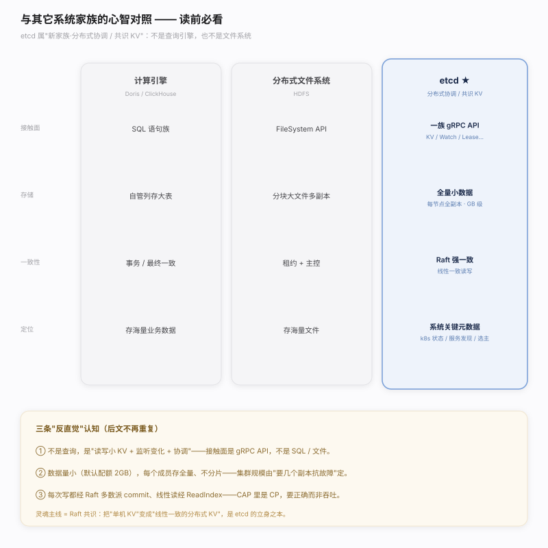
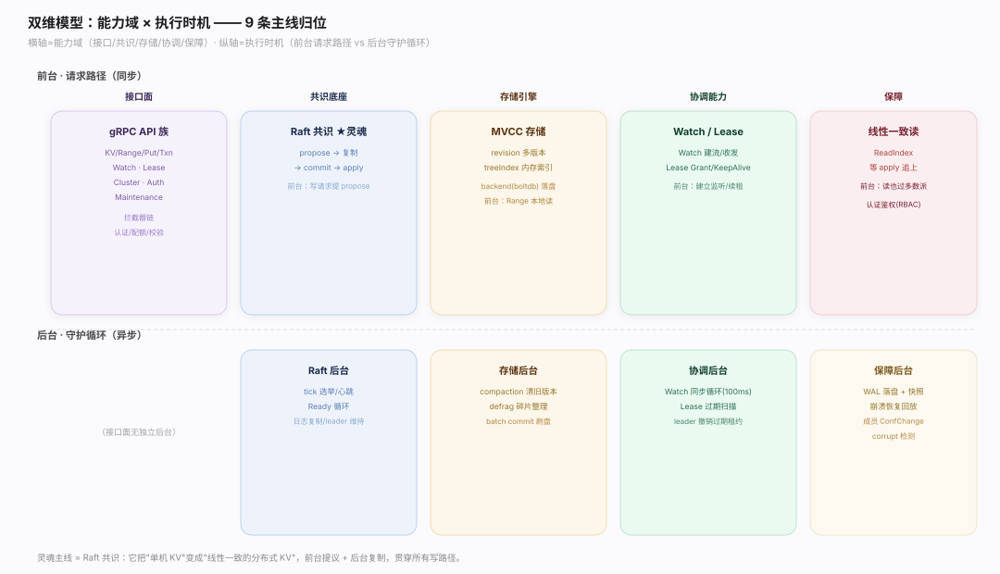
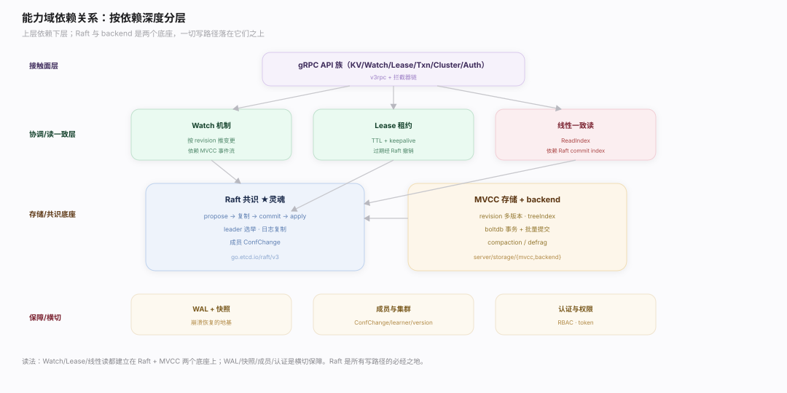
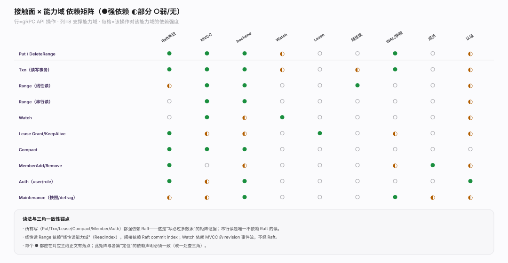
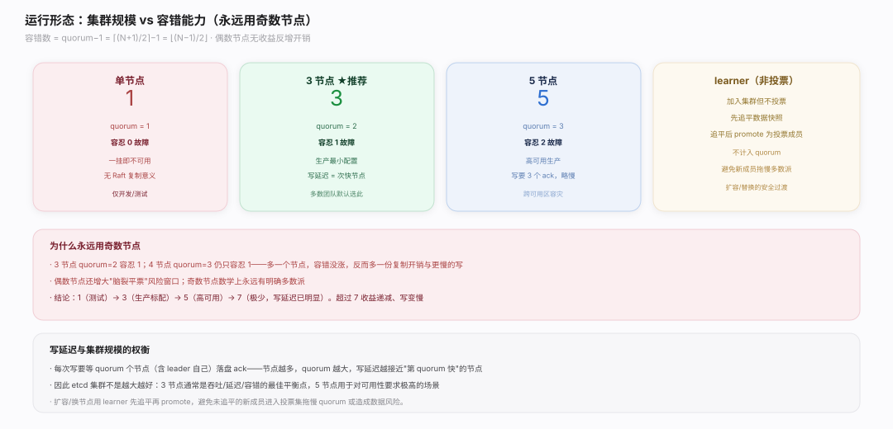
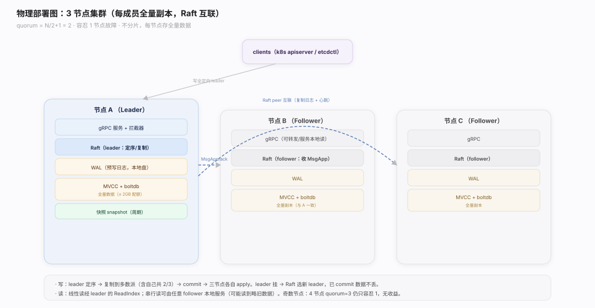
| 主线 | 一句话职责 | 核实锚点 |
|---|---|---|
| gRPC API 族（接触面） | KV(Range/Put/DeleteRange/Txn/Compact)、Watch、Lease、Cluster、Auth、Maintenance、Election/Lock；拦截器链（认证/配额/校验） | api/etcdserverpb/rpc.proto、server/etcdserver/api/v3rpc/* |
| Raft 共识（灵魂） | propose→复制→commit→apply；leader 选举、日志复制、成员变更 | go.etcd.io/raft/v3、server/etcdserver/raft.go |
| MVCC 存储 | 多版本 KV：revision 单调递增、treeIndex 内存索引、boltdb 落盘 | server/storage/mvcc/* |
| backend（boltdb） | 底层持久化：bbolt 事务、批量提交、读写缓冲、defrag | server/storage/backend/* |
| Watch 机制 | 按 revision 推送 KV 变更事件；synced/unsynced/victim 分组 | server/storage/mvcc/watchable_store.go |
| Lease 租约 | TTL + keepalive；过期堆、leader 撤销、checkpoint | server/lease/* |
| 线性一致读 | ReadIndex：读也要跟上多数派进度 | server/etcdserver/v3_server.go |
| WAL 与快照 | 预写日志 + 定期快照；崩溃恢复回放 | server/storage/wal/*、server/etcdserver/server.go |
| 成员与集群 | ConfChange 增删成员、learner、cluster version | server/etcdserver/api/membership/* |
| 认证与权限 | RBAC：user/role、key range 权限、token | server/auth/* |
| 维度 | 计算引擎（Doris/ClickHouse） | 分布式文件系统（HDFS） | etcd | 影响 |
|---|---|---|---|---|
| 接触面 | SQL 语句族 | FileSystem API | 一族 gRPC API（KV/Watch/Lease/…） | 不是查询，是"读写小 KV + 监听变化 + 协调" |
| 存储 | 自管列存大表 | 分块大文件多副本 | 全量小数据 + 每节点全副本 | 数据量小（GB 级，默认配额 2GB）、每个成员存全量 |
| 一致性 | 事务/最终一致 | 租约 + 主控 | Raft 强一致（线性一致读写） | 每次写都经多数派 commit，这是 etcd 的立身之本 |
| 定位 | 存海量业务数据 | 存海量文件 | 存"关于系统的关键元数据" | k8s 全部状态、服务发现、分布式锁、选主——要正确而非吞吐 |
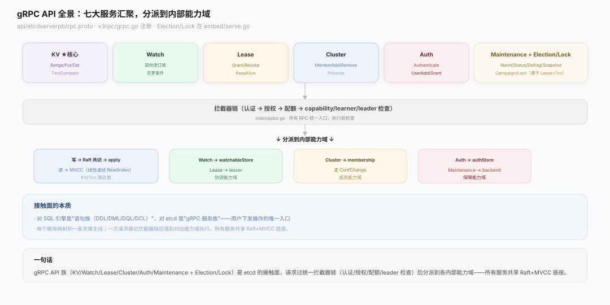
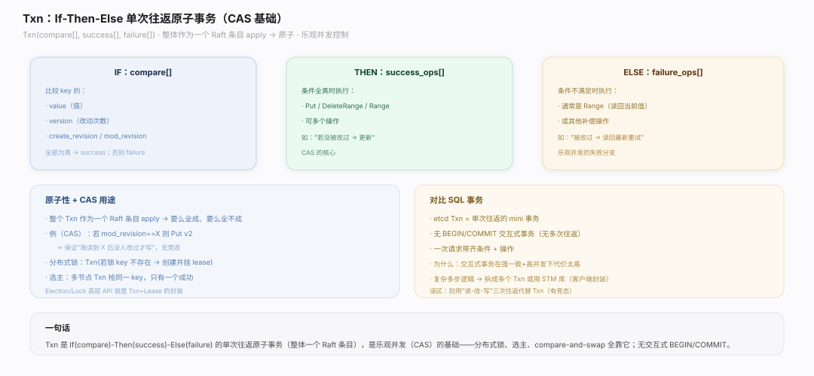
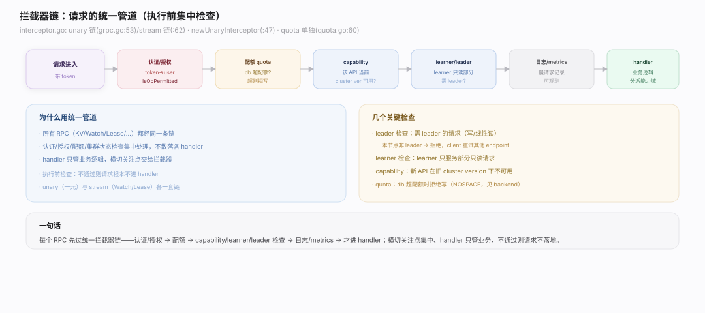
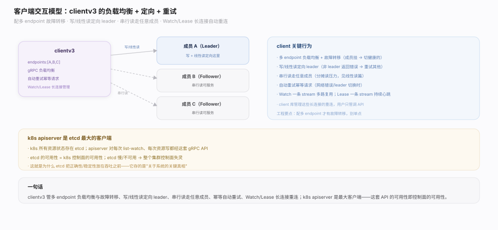
一组 gRPC 服务（KV/Watch/Lease/Cluster/Auth/Maintenance + Election/Lock）→ 拦截器链（认证/配额/校验）→ 分派到内部能力域。它是所有支撑主线的汇聚点：KV→[[MVCC 存储]]、写→[[Raft 共识]]、Watch→[[Watch 机制]]、Lease→[[Lease 租约]]、Cluster→[[成员与集群]]、Auth→[[认证与权限]]。核实基准：~/workdir/etcd/api/etcdserverpb/rpc.proto + server/etcdserver/api/v3rpc（main，v3.8.0-alpha.0）。--max-request-bytes：单请求上限（默认 1.5MB）——大 value 撑大日志/WAL。--max-concurrent-streams：单连接并发流上限。| 服务 | 关键方法 | 归属能力域 |
|---|---|---|
| KV | Range/Put/DeleteRange/Txn/Compact | MVCC + Raft |
| Watch | Watch（双向流） | Watch 机制 |
| Lease | Grant/Revoke/KeepAlive | Lease 租约 |
| Cluster | MemberAdd/Remove/Promote | 成员与集群 |
| Auth | Authenticate/UserAdd/… | 认证与权限 |
| Maintenance | Alarm/Status/Defragment/Snapshot | backend/运维 |
| Election/Lock | Campaign/Lock（基于 Lease+Txn） | 高层封装 |
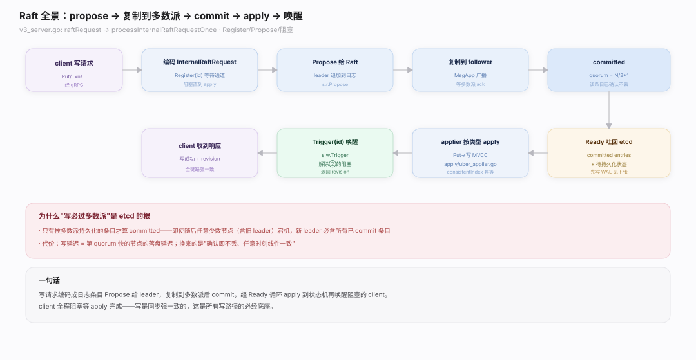
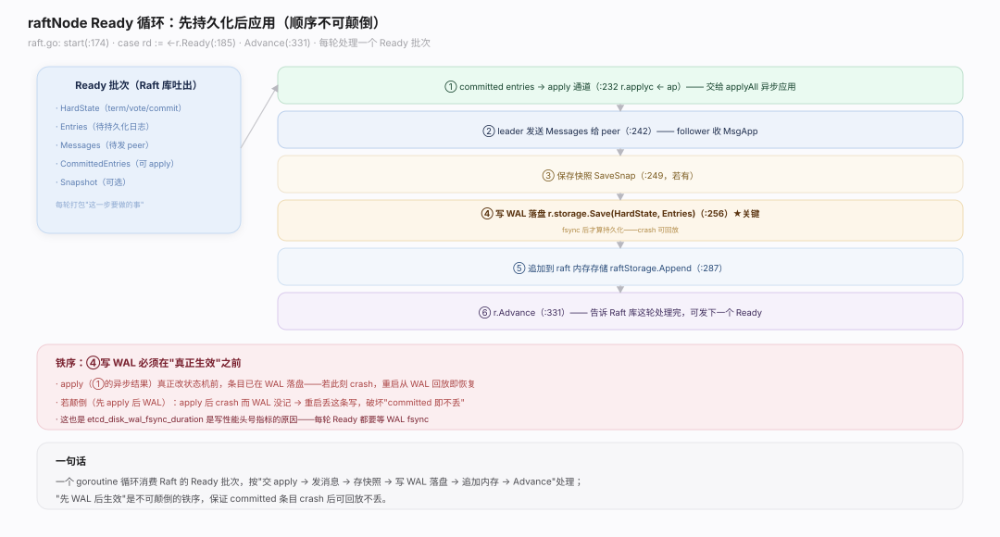
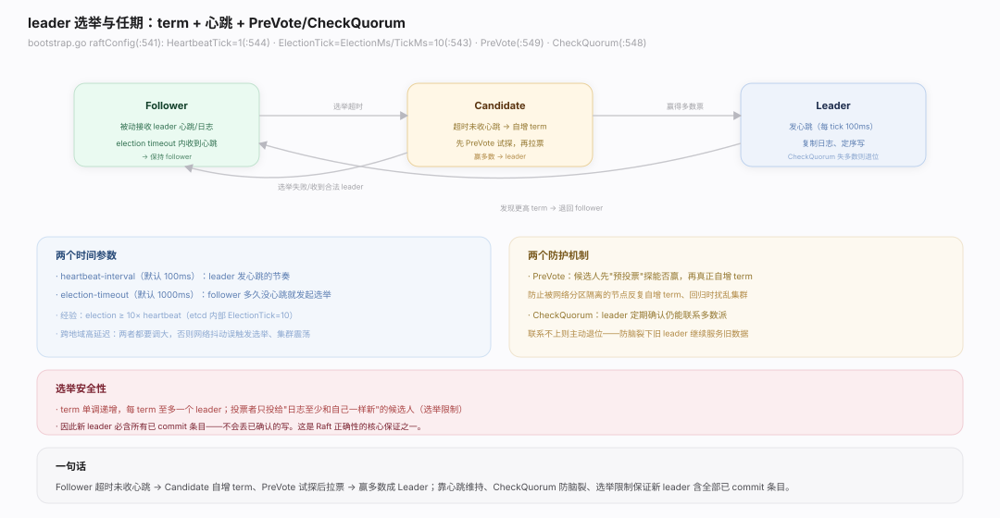
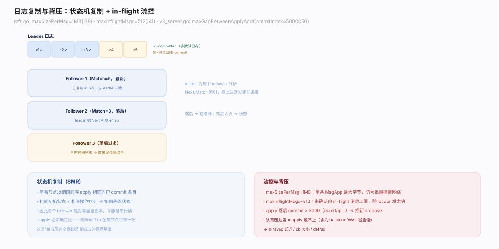
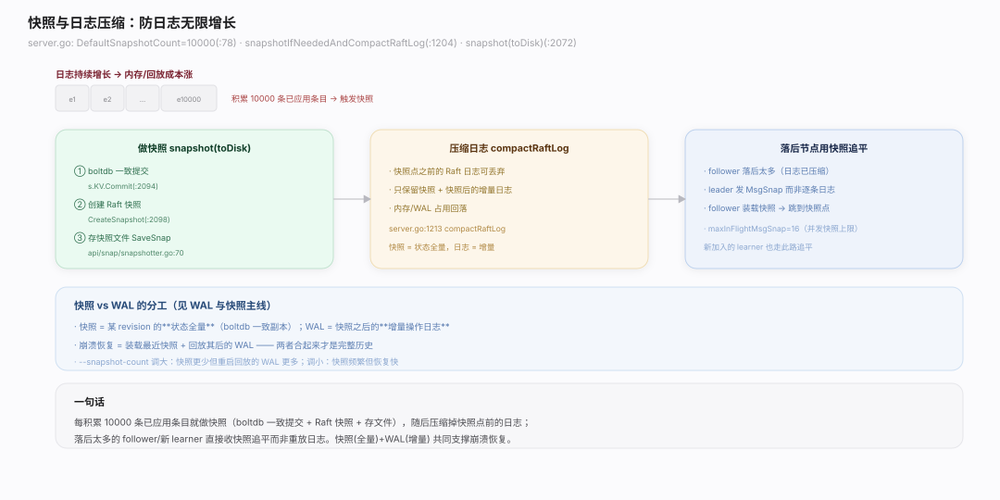
propose → 日志复制到多数派 → commit → apply。它是所有写路径的必经之地（见依赖矩阵：所有写都强依赖它），被 [[MVCC 存储]] 承接 apply、被 [[线性一致读]] 用作 ReadIndex 来源、被 [[WAL 与快照]] 持久化、被 [[成员与集群]] 用 ConfChange 变更。Raft 本身是独立库 go.etcd.io/raft/v3 v3.7.0；etcd 侧集成在 server/etcdserver/raft.go + v3_server.go。核实基准：~/workdir/etcd（main，v3.8.0-alpha.0）。--heartbeat-interval：心跳间隔（默认 100ms）——跨地域高延迟网络需调大。--election-timeout：选举超时（默认 1000ms）——建议 ≥ 10× heartbeat；太小易误触发选举。--snapshot-count：多少条已应用条目触发快照（默认 10000）——调大减少快照频率但增加重启回放量。--max-request-bytes：单请求上限（默认 1.5MB）——大 value 会撑大日志与 WAL。--experimental-* / --pre-vote：PreVote 默认开，一般不动。maxGapBetweenApplyAndCommitIndex 触发说明 apply（多为磁盘慢）跟不上 commit——查 backend/WAL fsync 延迟。| 类别 | 项 | 说明 |
|---|---|---|
| 消息类型 | MsgApp/MsgVote/MsgHeartbeat/MsgSnap | 复制/选举/心跳/快照 |
| 优化 | PreVote / CheckQuorum | 防分区扰动 / 防脑裂 |
| 成员变更 | ConfChange（单步） | 增删成员经日志，见成员主线 |
| 背压 | maxGapBetweenApplyAndCommitIndex=5000 | apply 落后过多则拒新 propose |
| in-flight | maxInflightMsgs=512, maxSizePerMsg=1MB | 复制流控 |
| Learner | 非投票日志接收者 | 追平后 promote，见成员主线 |
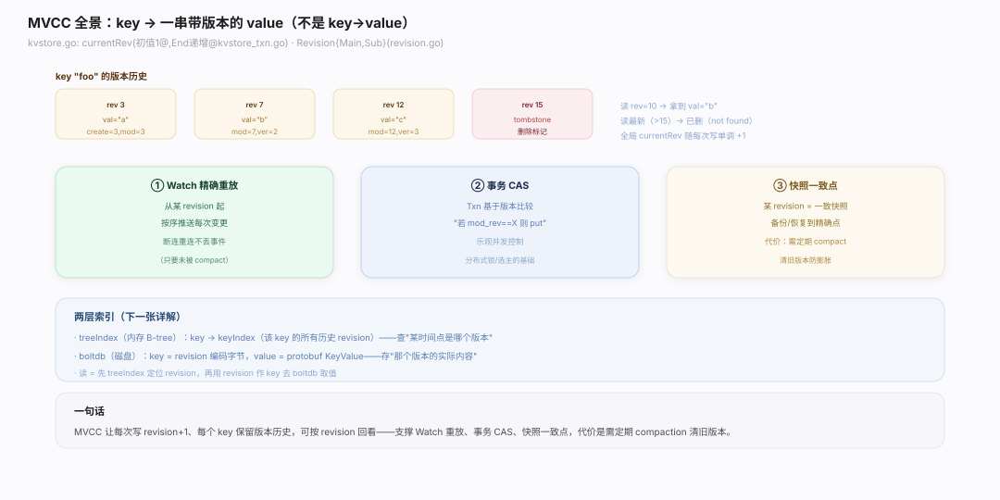
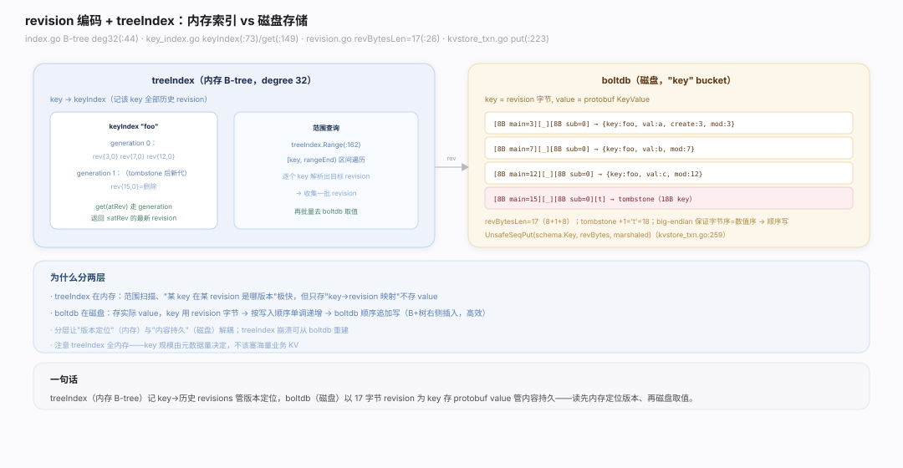
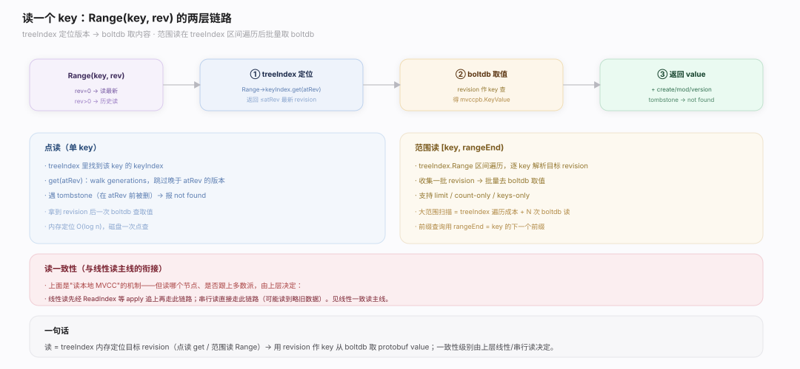
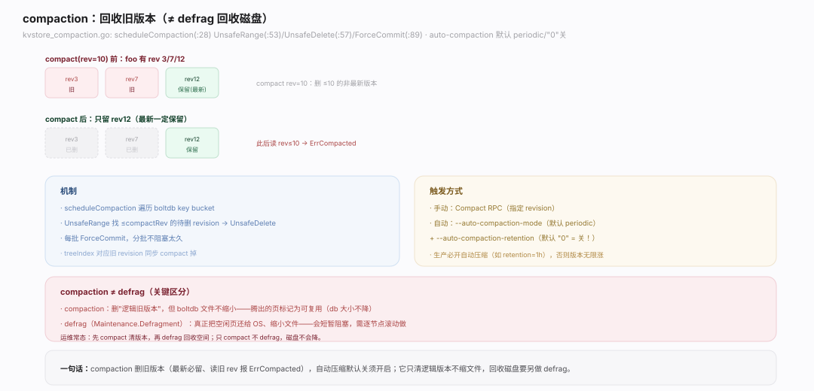
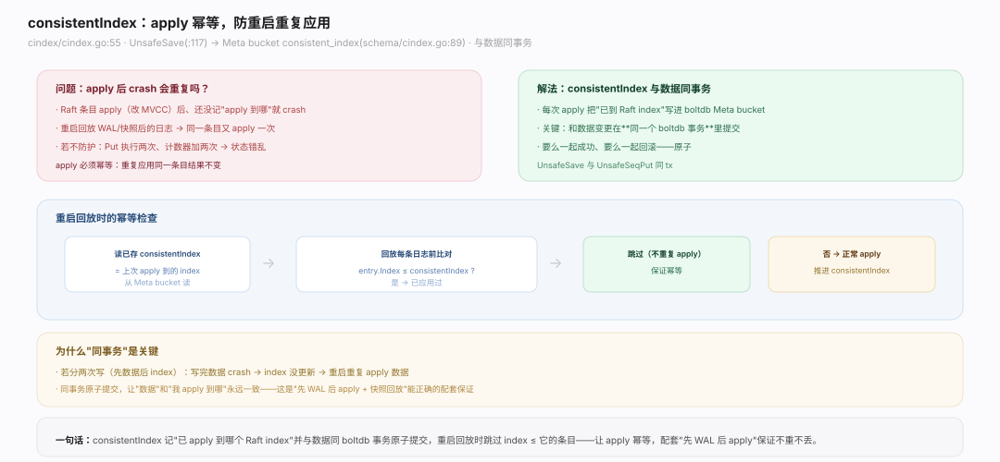
revision 单调递增 → treeIndex 内存索引（key→revisions）→ boltdb 持久化（key=revision, val=protobuf）。承接 [[Raft 共识]] 的 apply、为 [[Watch 机制]] 提供按 revision 的事件流、被 [[线性一致读]] 在本地读取、底层落在 [[backend（boltdb）]]。核实基准：~/workdir/etcd/server/storage/mvcc（main，v3.8.0-alpha.0）。--auto-compaction-mode / --auto-compaction-retention：自动压缩（默认 periodic / "0"=关）——生产务必开，否则版本无限涨、db 撑爆。--quota-backend-bytes：db 大小配额（默认 2GB，最大 8GB）——超限触发 NOSPACE alarm、集群转只读。Compact + Defragment：压缩逻辑版本 + 回收物理空间，运维定期成对做。--snapshot-count：影响回放，见 [[Raft 共识]]。| 类别 | 项 | 说明 |
|---|---|---|
| 版本单位 | Revision{Main, Sub} | Main=事务号、Sub=事务内序号 |
| 内存索引 | treeIndex（B-tree deg 32） | key→keyIndex→revisions |
| 磁盘编码 | key=17B revision, val=KeyValue | 顺序追加写 |
| 版本字段 | create/mod/version | KeyValue 里记创建/修改 rev + 修改次数 |
| tombstone | 删除标记（+1 字节 t） | 开新 generation |
| 回收 | compaction | 删旧版本，读旧 rev → ErrCompacted |
| 幂等 | consistentIndex | 与数据同事务，防重复 apply |
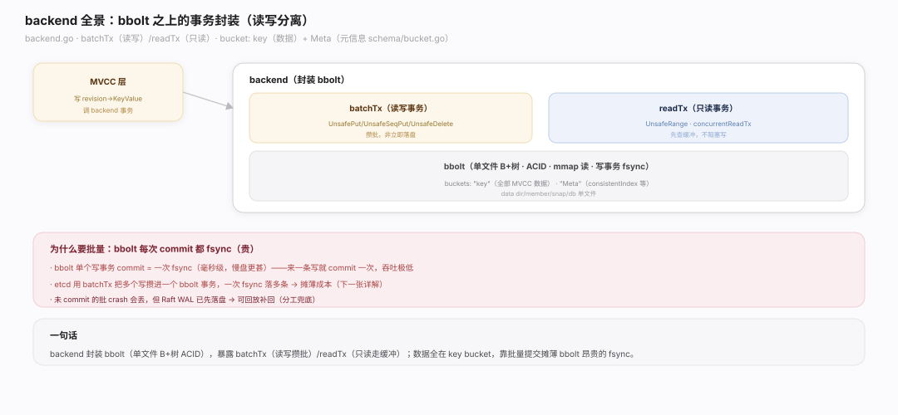
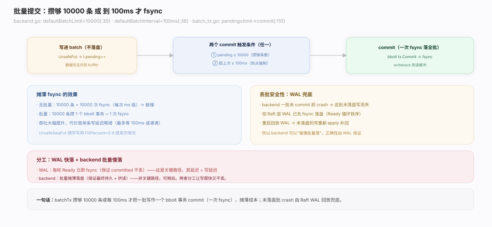
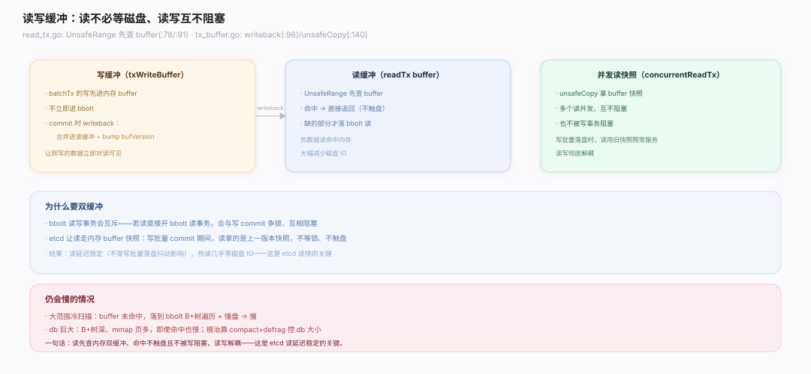
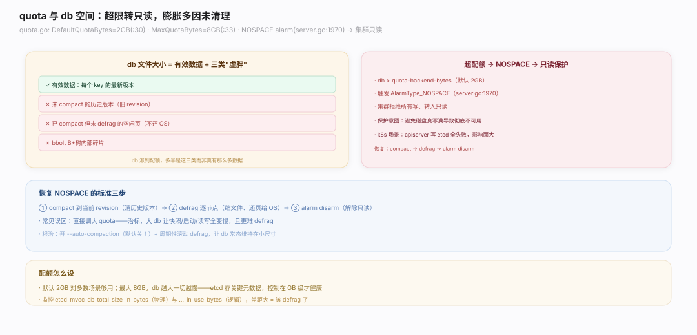
bbolt 事务（读写 batchTx / 只读 readTx）→ 批量提交（攒够或到点才 fsync）→ 读写缓冲加速。被 MVCC 直接调用，其 fsync 延迟与 db 大小是 etcd 写性能与容量的头号约束。核实基准：~/workdir/etcd/server/storage/backend（main，v3.8.0-alpha.0）。key bucket，通过批量提交（攒 10000 条或每 100ms）把多写摊进一个 bbolt 事务、摊薄昂贵的 fsync（丢的未落盘写由 Raft WAL 兜底回放）；读写双缓冲让热读不触盘、读写解耦。db 有 2GB 默认配额（最大 8GB），超限触发 NOSPACE 转只读——db 膨胀多因未 compact/defrag 而非真有那么多数据，SSD + 定期压缩碎片整理是健康前提。--quota-backend-bytes：db 配额（默认 2GB，最大 8GB）——按元数据规模设，别盲目调大（大 db 一切变慢）。--backend-batch-limit / --backend-batch-interval：批量提交阈值（默认 10000 / 100ms）——高写入可调，权衡延迟 vs fsync 频率。--backend-bbolt-freelist-type：freelist 类型（map/array），大 db 用 map 更快。Defragment：定期滚动 defrag 回收空间（阻塞该节点，逐节点做）。etcd_disk_backend_commit_duration_seconds（backend fsync）与 etcd_mvcc_db_total_size_in_bytes。| 类别 | 项 | 说明 |
|---|---|---|
| 底层 | bbolt（单文件 B+树） | ACID、mmap 读、写事务 fsync |
| 事务 | batchTx（读写）/ readTx（只读） | 读写分离 |
| bucket | key / Meta | 数据 / 元信息 |
| 批量 | batchLimit=10000, interval=100ms | 摊薄 fsync |
| 缓冲 | 读缓冲 + 写缓冲 | 读不触盘、读写解耦 |
| 配额 | 2GB 默认 / 8GB 最大 | 超限 NOSPACE 转只读 |
| 空间回收 | defrag | 缩小文件，还页给 OS |
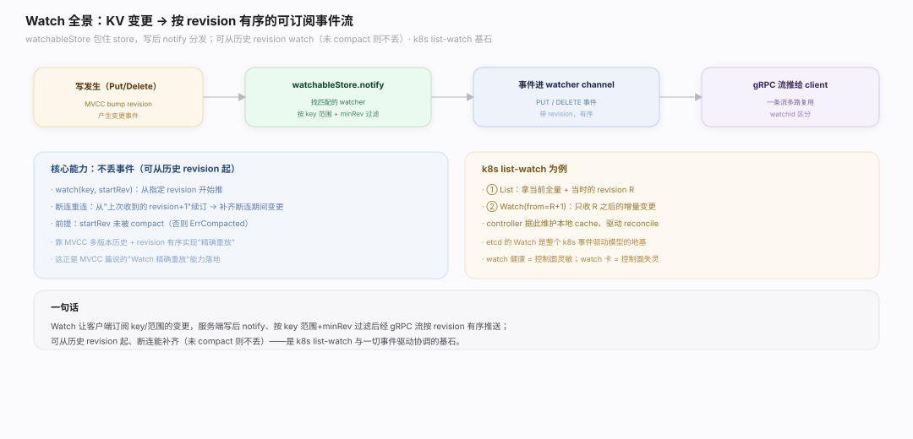
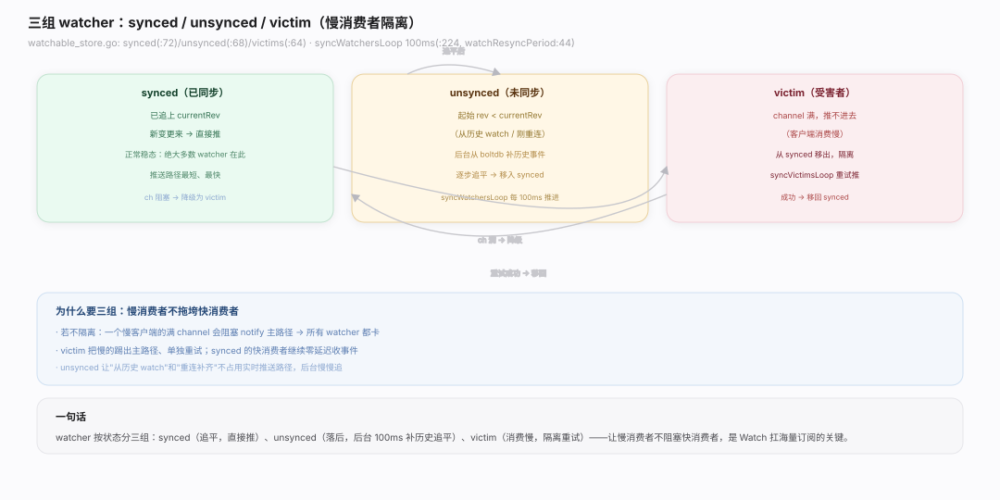
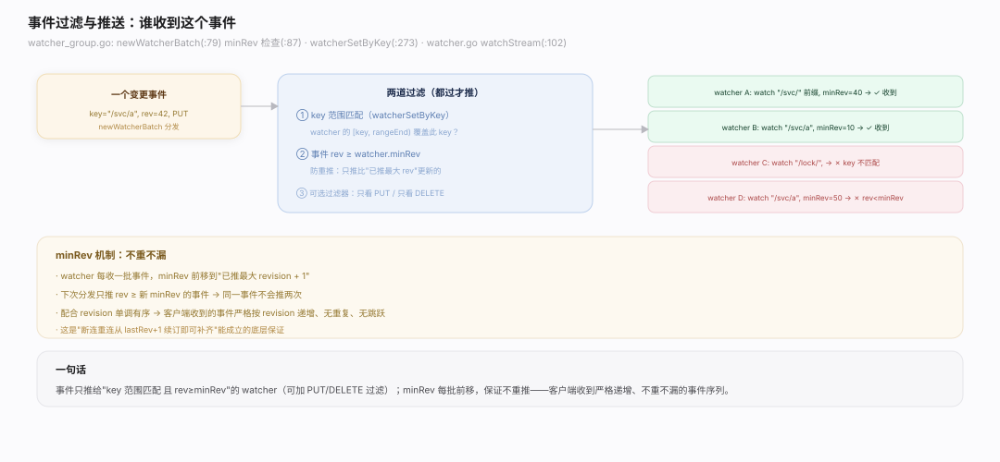
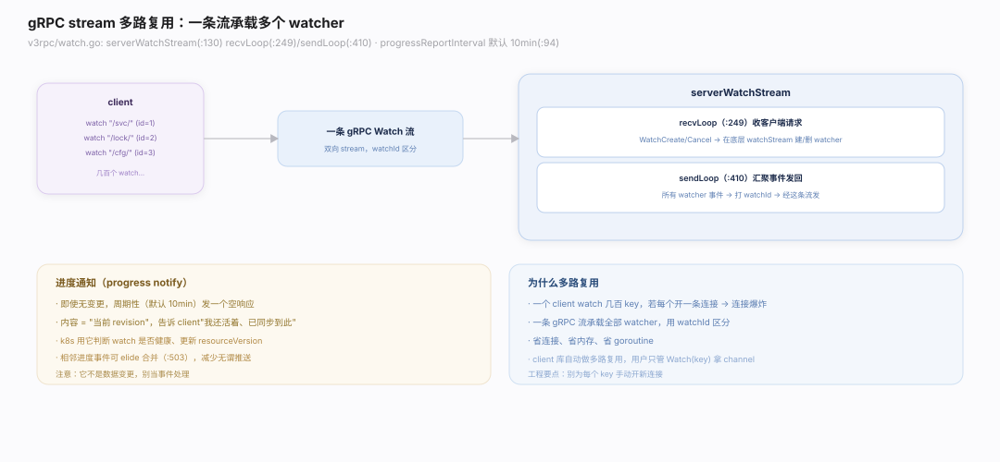
按 revision 订阅 → watcher 分 synced/unsynced/victim 三组 → 后台同步循环推事件。依赖 [[MVCC 存储]] 的 revision 事件流、经 [[gRPC API 族]] 的 stream 多路复用给客户端。核实基准：~/workdir/etcd/server/storage/mvcc + api/v3rpc/watch.go（main，v3.8.0-alpha.0）。--watch-progress-notify-interval：进度通知间隔（默认 10min）——k8s 等依赖它判活，一般不改。--max-request-bytes / stream 数：海量 watch 时关注内存与 goroutine。| 类别 | 项 | 说明 |
|---|---|---|
| 订阅粒度 | 单 key / 前缀范围 | rangeEnd 指定范围 |
| 起始点 | 当前 / 历史 revision | 历史需未被 compact |
| 分组 | synced/unsynced/victim | 追平/补历史/慢消费者隔离 |
| 不丢保证 | minRev + revision 有序 | 断连重连可补齐 |
| 进度 | progress notify（默认 10min） | 无变更也报当前 revision |
| 多路复用 | 一 gRPC 流多 watcher | watchId 区分 |
| 失效 | ErrCompacted | watch 的起始 rev 已被压缩 |
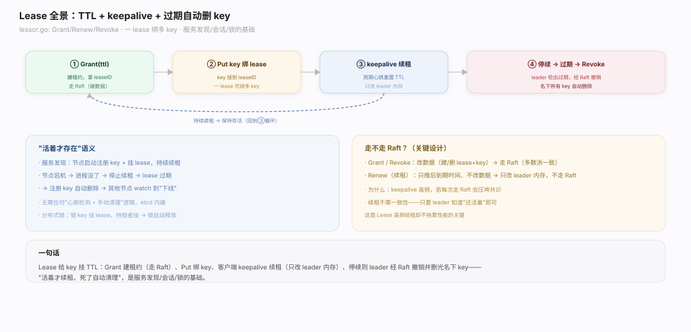
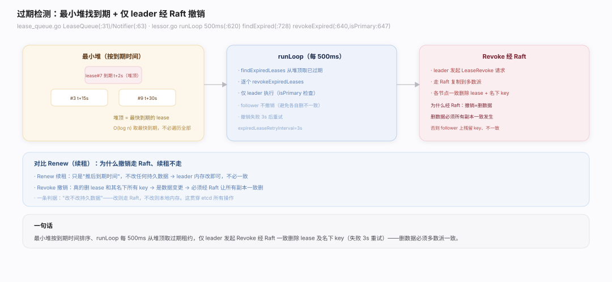
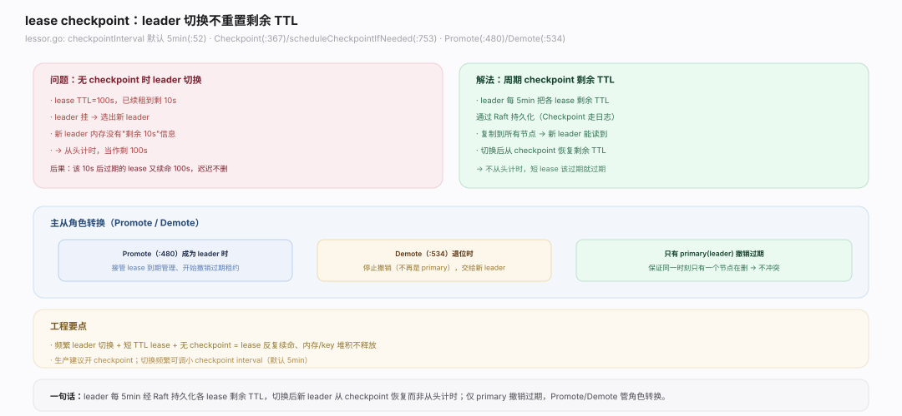
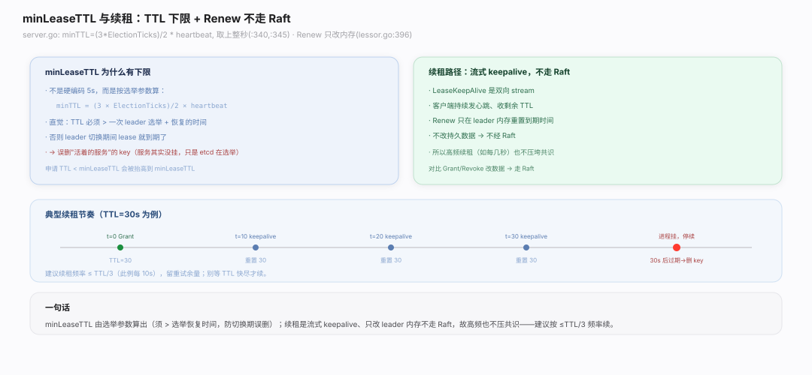
Grant 建租约 → 客户端 keepalive 续租 → 过期堆管到期 → leader 经 Raft 撤销。依赖 [[Raft 共识]]（撤销走日志）、[[MVCC 存储]]（key 关联 lease）。核实基准：~/workdir/etcd/server/lease（main，v3.8.0-alpha.0）。--experimental-lease-checkpoint-interval / checkpoint：默认 5min，频繁 leader 切换场景可调小。| 类别 | 项 | 说明 |
|---|---|---|
| 操作 | Grant/Revoke/Renew/TimeToLive/Leases | 建/撤/续/查/列 |
| 绑定 | 一 lease 多 key | lease 撤销 → 名下 key 全删 |
| 过期结构 | 最小堆（LeaseQueue） | O(log n) 找最快到期 |
| 撤销 | 仅 leader，经 Raft | 删数据要多数派一致 |
| 续租 | leader 内存，不经 Raft | 高频也不拖累共识 |
| checkpoint | 默认 5min | leader 切换保剩余 TTL |
| 最小 TTL | ~由选举参数算 | 须 > 选举恢复时间 |
| 重试 | 3s（撤销失败） | expiredLeaseRetryInterval |
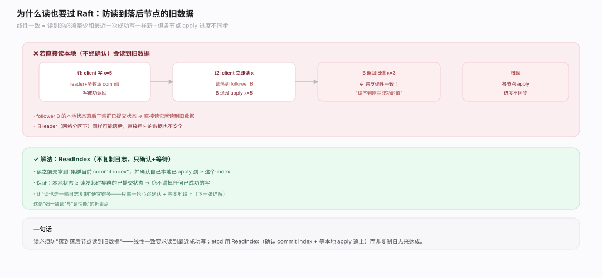
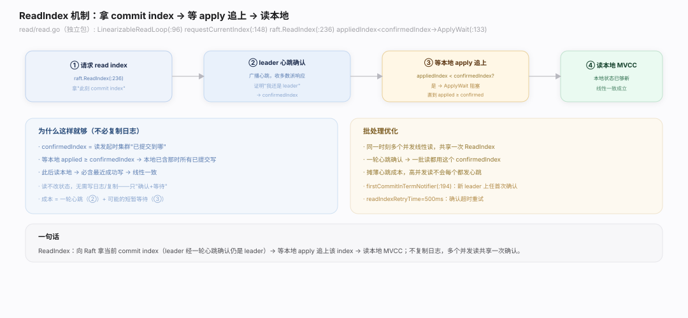
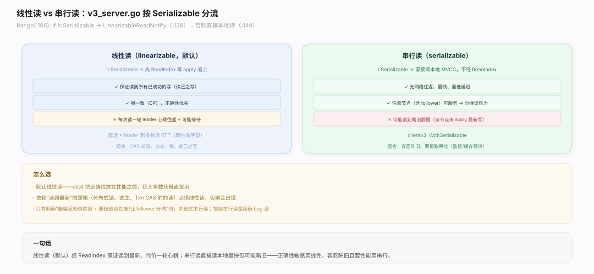
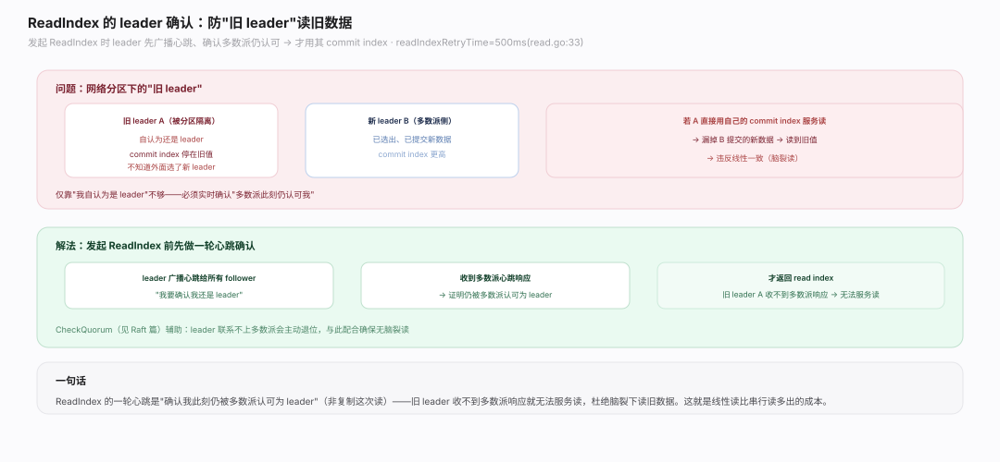
ReadIndex 向 Raft 拿当前 commit index → 等本地 apply 追上 → 读本地 MVCC。它是 etcd 默认读语义，与写一样是 CP 保证。依赖 [[Raft 共识]] 的 commit index、读 [[MVCC 存储]] 本地数据。核实基准：~/workdir/etcd/server/etcdserver/read/read.go + v3_server.go（main，v3.8.0-alpha.0；注：linearizable read loop 已从 v3_server.go 抽到独立 read/ 包）。WithSerializable）：对陈旧不敏感、要极致读性能时用，可让 follower 分担读。| 类别 | 项 | 说明 |
|---|---|---|
| 默认 | 线性读 | ReadIndex + 等 apply 追上 |
| 可选 | 串行读 | 本地直读，可能略旧 |
| 分流点 | RangeRequest.Serializable | v3_server.go:138 |
| leader 确认 | 一轮心跳 | 防旧 leader 读旧数据 |
| 批处理 | 并发读共享 ReadIndex | 摊薄心跳成本 |
| 重试 | readIndexRetryTime=500ms | 确认超时重试 |
| 与写关系 | 都是 CP | 读己之写成立 |
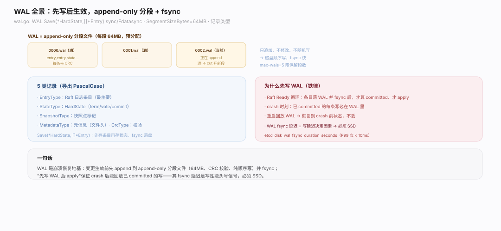
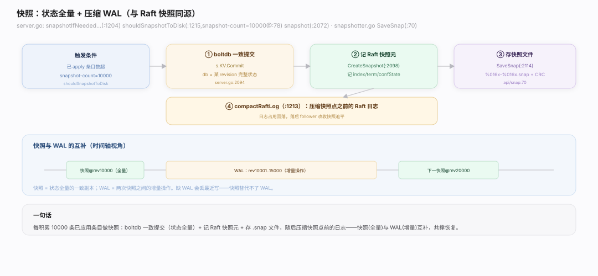
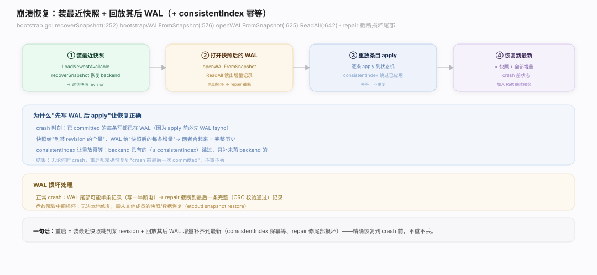
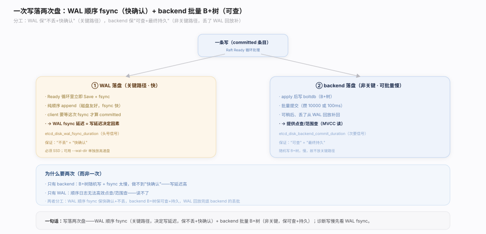
WAL 预写日志（append-only 分段 + fsync）+ 周期快照（状态全量）→ 重启 = 装最近快照 + 回放其后 WAL。承接 [[Raft 共识]] Ready 循环的"先写 WAL"、与 [[MVCC 存储]]/[[backend（boltdb）]] 的快照配合。核实基准：~/workdir/etcd/server/storage/wal + server/etcdserver/{server,bootstrap}.go + api/snap（main，v3.8.0-alpha.0）。--wal-dir 把 WAL 单独放高速盘。--snapshot-count（默认 10000）：调大 → 快照少、重启回放的 WAL 多；调小 → 快照频繁、恢复快、但快照有开销。--max-wals（默认 5）：保留 WAL 段数。--max-snapshots：保留快照文件数。etcd_disk_wal_fsync_duration_seconds（P99 应 < 10ms）与 etcd_disk_backend_commit_duration_seconds。--wal-dir。| 类别 | 项 | 说明 |
|---|---|---|
| WAL 文件 | append-only 分段 64MB | 预分配、CRC 校验 |
| 记录类型 | Metadata/Entry/State/Crc/Snapshot | 5 类 |
| 快照触发 | snapshot-count=10000 | 已 apply 条目数阈值 |
| 快照内容 | boltdb 一致副本 + Raft 元信息 | 状态全量 |
| 保留 | max-wals=5 | WAL 段数上限 |
| 恢复 | 快照 + 回放 WAL | bootstrap 阶段 |
| 损坏修复 | repair 截断 | 尾部 crash 半条记录 |
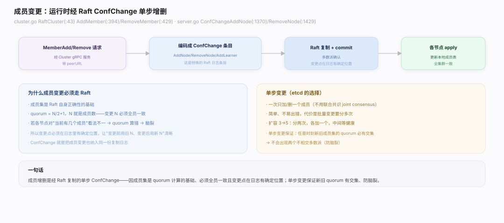
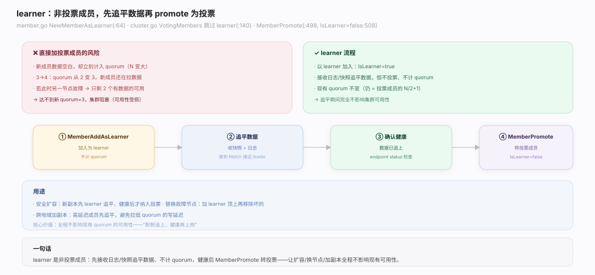
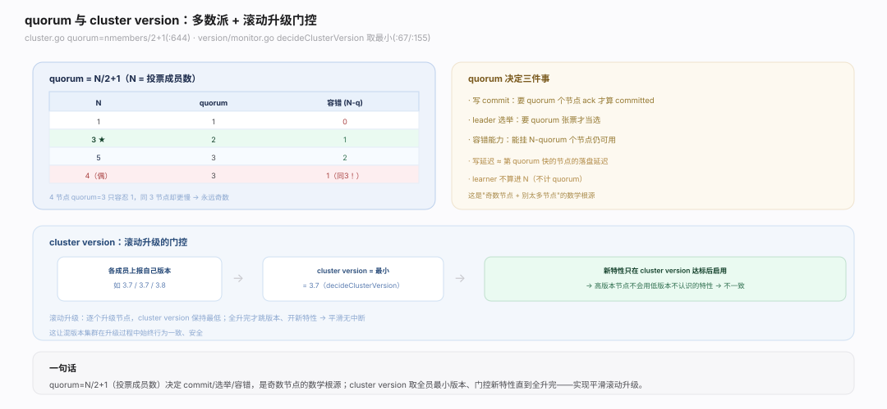
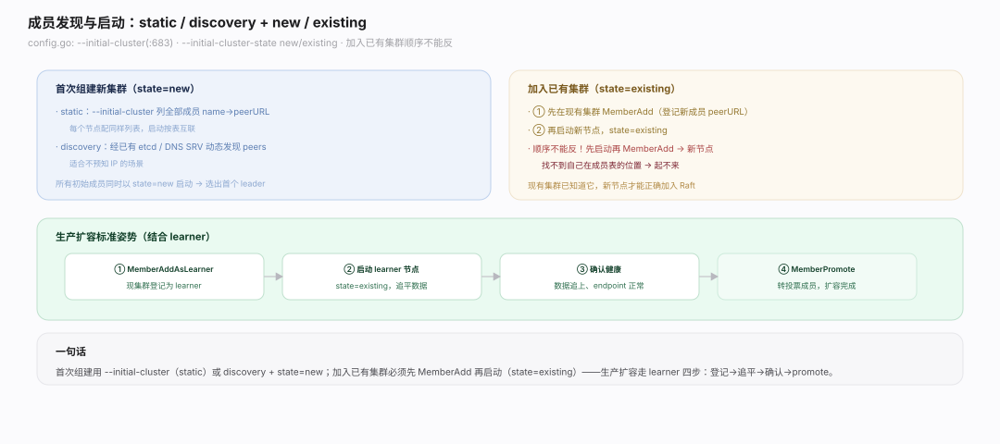
成员变更走 Raft ConfChange → learner 先追平再 promote → cluster version = 各成员最小版本。依赖 [[Raft 共识]]（ConfChange 也是日志条目）。核实基准：~/workdir/etcd/server/etcdserver/api/membership + server.go（main，v3.8.0-alpha.0）。MemberAddAsLearner → 追平 → MemberPromote，避免空白成员拖 quorum。--initial-cluster / --initial-cluster-state：初始组建 vs 加入已有，配对使用。MemberAdd（在现集群登记）再启动新节点（state=existing）。| 类别 | 项 | 说明 |
|---|---|---|
| 变更 | ConfChange（单步） | 一次加/删一个，走 Raft |
| 成员类型 | voting / learner | learner 不计 quorum |
| quorum | N/2+1（N=投票数） | 决定容错/选举/commit |
| 提升 | MemberPromote | learner 追平后转投票 |
| 版本 | cluster version = min | 滚动升级门控 |
| 发现 | static / discovery | initial-cluster / DNS SRV |
| 启动态 | new / existing | 建新 / 加入已有 |
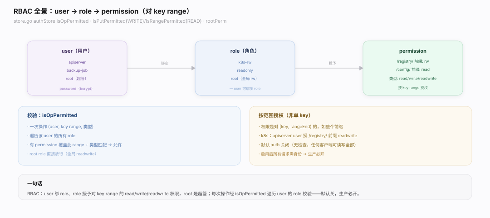
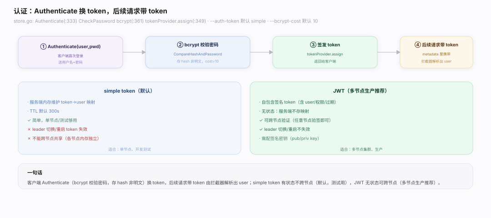
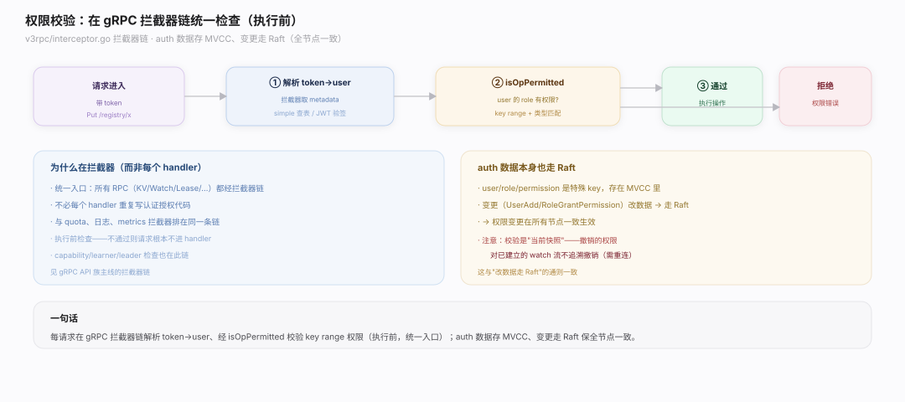
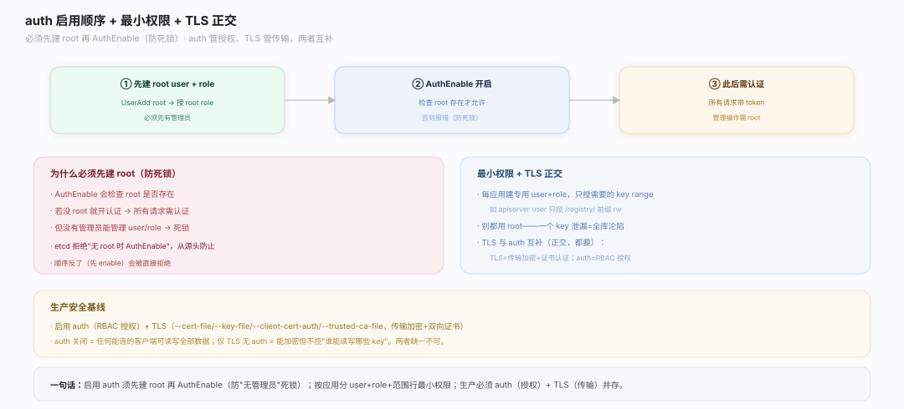
认证（user + password/token 证明身份）→ 授权（role 绑定 key range 权限）→ 每次请求校验。经 [[gRPC API 族]] 拦截器链在请求入口检查。核实基准：~/workdir/etcd/server/auth（main，v3.8.0-alpha.0）。--auth-token：simple（默认，单节点/测试）vs jwt（多节点生产推荐，无状态跨节点）。--bcrypt-cost：密码哈希强度（默认 10）——高安全场景可调高，代价是认证变慢。--cert-file/--key-file/--client-cert-auth/--trusted-ca-file——传输加密 + 双向证书。| 类别 | 项 | 说明 |
|---|---|---|
| 模型 | RBAC：user→role→permission | 经典角色授权 |
| 权限类型 | read / write / readwrite | 按 key range |
| 超级用户 | root role | 全局 readwrite |
| 密码 | bcrypt hash | cost 默认 10 |
| token | simple / JWT | 默认 simple；多节点用 JWT |
| 校验点 | gRPC 拦截器链 | 统一入口 |
| auth 数据 | 存 MVCC，变更走 Raft | 全节点一致 |
| 传输安全 | TLS（正交） | 加密 + 证书认证 |